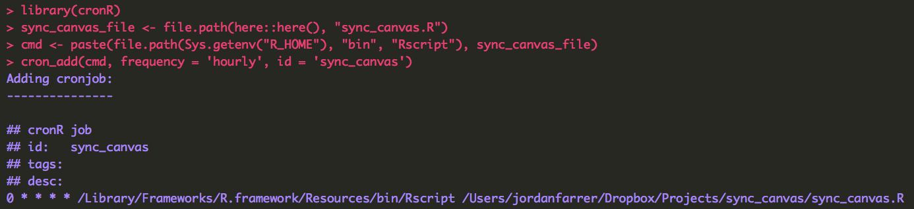

1 tl;dr
- Frustrating to regularly download files from Canvas (learning management system used at Wharton) each time a professor adds/modifies a file
- This guide outlines a quick solution for syncing Canvas files for a set of classes using only R
2 Background
When I first started at Wharton, I modified this python script and set it up to download Canvas files every 30 minutes on an EC2 instance. I then used headless Dropbox to sync to my local machine. It was quite a nice solution because it did not depend on my location machine and I would get a desktop notification from Dropbox every time a new file was added to Canvas.
However, the structure of this script was for all files for all classes. I do not need all the files from previous classes and would prefer selective syncing. I started to modify the python script and then just decided to see if I could rewrite this in R. In addition to selective syncing, I added a check to see if the file size had changed. If so, the script re-downloads the file. This occurs when a professor updates a syllabus or homework assignment without changing the filename. A limitation of this script is that it does not delete files that the professor has removed from Canvas. I’m not too concerned with this limitation - this script was something I built in a morning before class and it was not meant to me a perfect product.
3 Guide
3.1 Download Files
First you need to download the files from github. You can download the github repo either by cloning it
git clone https://github.com/jrfarrer/sync_canvas.gitor by downloading the zip file from the repo.
Once you have downloaded this folder either by cloning the repo or downloading the zip, open sync_canvas.Rproj to open the RStudio project.
3.2 Canvas Access Token
We need to create an API key (or access token) so that we can access Canvas outside of the browser. We will be using the Files API (full documentation).
3.2.1 Creating the token on Canvas
On Canvas, click Account on the left-panel and then Setting. Scroll down and under Approved Integrations, click + New Access Token. In the dialog, give a purpose such as “sync_canvas” and leave the date empty. Then click Generate Token.
The token is the long string of characters. DO NOT SHARE this token as it provides access to your Canvas account. Copy it to the clipboard.
3.2.2 Adding Token to .Renviron file
Following good practice of securely storing API keys, we will put it in a .Renviron file that is loaded whenever the R sessions starts. To create the file and open it, run the following code1 in the R console.
user_renviron = path.expand(file.path("~", ".Renviron"))
if(!file.exists(user_renviron)) # check to see if the file already exists
file.create(user_renviron)
file.edit(user_renviron)It will open .Renviron in RStudio. Add the following line and save.
CANVAS_TOKEN = "YOUR API KEY"To test whether this worked, restart R by going to Session > Restart R in the RStudio menu. Then run the following in the R console.
Sys.getenv("CANVAS_TOKEN")It should return your API key - it is now an environmental variable.
3.3 Modify Course List
The R script only syncs data for courses listed in the file course_list.csv. It should already be open when you opened sync_canvas.Rproj. My spring 2018 schedule is listed, you need to change this for your schedule.
The first column of the csv will become the name of the course directory. The second column is ID of the class. To find the class ID, in Canvas go to the course page and the end of the URL will have a 7-digit ID. Just copy each one into this csv.
3.4 Set Local Directory
At the top of the sync_canvas.R file there is one directory that you need to change. To find a folder easily in Finder, right-click on the folder and press Option on the keyboard. This copies the entire path to the clipboard.
The one path is file_dir - location where you want to have the Canvas course files saved. For me, this is a folder in my Dropbox directory.
3.5 Initial file download
You need to ensure you have the tidyverse, jsonlite, and here packages installed. You should run this code in the R console check to ensure they are up-to-date.
install.packages(c('tidyverse', 'jsonlite', 'here'))We are all set to do an initial download. This will take a while, depending on how many classes you listed in the csv and the quantity/size of files uploaded by instructors. With sync_canvas.R open, click Source. It will take a while to run. You should be able to see the files populating in file_dir.
3.6 Automate Syncing
There are many better ways to setup automation of the file downloading process (e.g. launchd or airflow), but I wanted it to be quick and easy to setup. Cron is an older job scheduling utility that I’m very familiar with and is simple to setup and test. For this guide, we are using the R package cronR so that we do not leave RStudio, but all the package does is set up a cron job.
3.6.2 Create cron job
Run the following code chunk in the R console.
library(cronR)
sync_canvas_file <- file.path(here::here(), "sync_canvas.R")
cmd <- paste(file.path(Sys.getenv("R_HOME"), "bin", "Rscript"), sync_canvas_file)
cron_add(cmd, frequency = 'hourly', id = 'sync_canvas')
You now have the syncing process scheduled to run every hour on the hour (that your computer is turned on).
3.6.3 Logging
While cron can help with logging, I wanted a bit more control and handled logging within canvas_sync.R. After each run (on the hour), a log sync_canvas_log.csv will be updated in the project folder. The most recent files will appear at the top. Even if no files were downloaded, a row will be added indicating the process ran. I find it easy to use Quick Look (in Finder select sync_canvas_log.csv and hit the spacebar) to easily check on the process and what files have been added and I will never actually open the file. The run times are in UTC.
You are now all setup - close RStudio and stop downloading files from Canvas! I have Canvas email notifications setup when a professor uploads a file. Now I do not need to go and download it!
Source: Efficient R programming↩